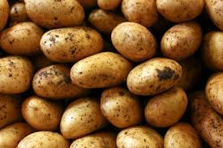

Potato

The potato is a starchy tuber of the plant Solanum tuberosum.
Tubers are a type of organ that some plants use to store nutrients.
Potatoes are one type of root vegetable.
This name refers to any underground part of a plant that is eaten by humans, regardless of whether it actually is a root.